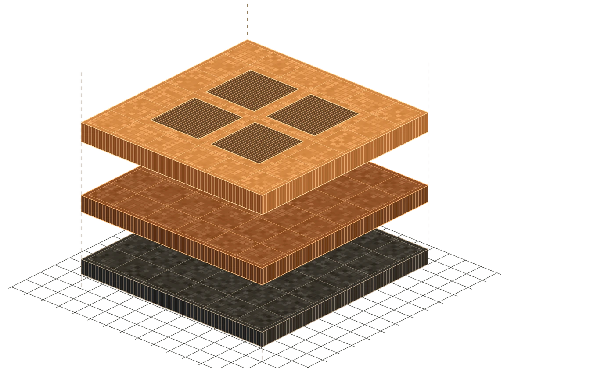

Rust
fn commit(self) -> u64
A consuming method takes ownership. Rust also permits the caller to let the transaction go out of scope. Libraries often use Drop to roll back an unfinished transaction.
The Vesper programming language
Vesper is a systems language without a garbage collector. A function declares which resources it consumes, which fields it may change, and which effects it may perform. The compiler checks those declarations at each call.

index inout metrics inout config inConsume a resource exactly once.
Borrow individual fields by name.
Declare and handle effects locally.
Language comparison
Compare a transaction, a field update, and a division that can fail.
fn commit(self) -> u64
A consuming method takes ownership. Rust also permits the caller to let the transaction go out of scope. Libraries often use Drop to roll back an unfinished transaction.
fn commit(sink self) -> u64
Declare WriteTxn as linear. Every returning path must consume it. In the example, the caller commits or aborts. Leaving the value unused is a compile-time error.
index: &mut u64, metrics: &mut u64
Rust can borrow separate struct fields at the same time. A helper taking &mut Broker borrows the whole record, so a common API passes the individual field references instead.
inout broker.{index, metrics}: Broker
Name the writable fields in the parameter. The caller passes the record and can lend broker.config separately because the checker can see that the places are disjoint.
fn divide(d: i64) -> Result<i64, MathError>
An API can return Result and let callers propagate errors with ?. Integer division by zero panics, so a fallible API typically checks the divisor or uses checked_div.
fn divide(divisor: i64) -> i64 eff [Fail[RuntimeError]]
The division declares Fail[RuntimeError] in its effect row. A caller can propagate that effect or install a lexical handler. The example handles division by zero and supplies a fallback value.
Choose Rust when you need a stable toolchain, crates for a specific platform, or an established production support path. Vesper implements a subset of its specification. Check the examples against your workload before adopting it.
Source explorer
Each example shows the signature, its caller, and the result.
Toolchain
vesper check
The checker reports type errors, unfinished transactions, conflicting loans, and missing effects before the program runs.
vesper build
The native backend lowers supported programs through Cranelift. Use vesper run to execute with the reference evaluator, or vesper jit to run native code.
vesper emit --emit lean
Extract a Lean 4 model of a supported program, then prove properties about its definitions. Applying that proof to the native executable also requires showing that compilation preserves the modeled behavior.
Getting started
Install a compatible Rust toolchain and a system C linker. The commands build Vesper, check the transaction example, and run it. A successful run prints 42, the slot returned by commit.
git clone https://github.com/robot-head/vesper.git
cd vesper
cargo build --locked -p vesper
./target/debug/vesper check examples/transaction.ves
./target/debug/vesper run examples/transaction.vesReference